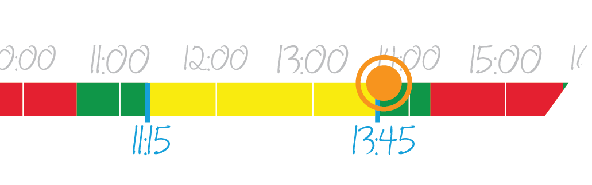

An important feature of access mangement systems is room booking. It
allows employees to see which rooms are avaible and to book them
whenever they need them.
A good room booking system has to be very easy to use from any device
so that employees can use it frequently without loosing time.
If implemented right, it enables the company to release a large number
of rooms for use by all employees on a as-needed basis. This means that
real estate can be used much more efficiently and that employees always
work in the enviroment in which they are the most productive at their
current task.
Your task is to create a simple prototype app of such a room booking system that uses data provided by the API hosted under the url you are viewing this document from. You can use whatever languages and frameworks you like as long as the final result is a truly native, "non-web" app and you are not using a second backend of your own to process the data provided by the API.
There are (almost) no design requirements and you can rearrange the
elments in any way you like. It's your task to create a design and
corresponding interface elements that you think are the most intuitive
and easy to use for the users of the system. You can also decide if you
opt for a tablet or phone optimzed design
We encourage you to use animations when suitable and to create highly
interactive and responsive interface elements accordingly (Think about
how unintuitive it is to enter the time via a long dropdown compared to
the way apple did it on iOS).
In order to match our corperate design, please use the following colors
and variations of them (lighter,darker,etc) whenever you can:
The following mockups are only illustrative and do not represent an actual design you have to follow.
Upon opening the app all rooms that are avaiable for the user today should be loaded and displayed to him. As soon as he selects or enters a new date, the list is refreshed.
The user should be able to filter the results by different parameters. Implement at least two filters: a room name search and a way to find rooms that are avaiable during the next hour. You can also add more filters if you want (equipment, capacity, size, etc). The list should always update itself instantly when working with filters.
The most important data provided by the API is the current booking shedule. It contains a list of times during which the room has been booked. All rooms are only avaiable between 7AM and 7PM and can be booked in 15min steps. We want you to create a new visual element that enables users to see immediately at which times of the day a room is avaiable. We have found that a colored "time bar" works quite well, but you can also try to find a better way
Additional information is provided for every room: room name, location, size&capacity, available equipment and up to 3 images. It's probably best to not display all information at once and to provide the user a detailed view when he selects a room.
When users select to book a room, a booking view for the room should be revealed. The user has to select the time, enter an event description and can add an ulimted number participants.
Selecting time ranges is often clumsy and not intuitive. You can try to find a better way to select and adjust the time range, for example with simple drag operations on the booking shedule element you created before.

Users should not be able to choose a time that overlaps with an existing booking.
For each atendee, name, email and phone number have to be entered. It should be possible to remove atendees that have already been added.
All Input fields should be validated and the user should be only able to sumbit the form when everything is correct. After the booking has been succesfully created, the user should get an apropriate visual response.
The API for the challenge is static and therefore the booking is not saved by the backend. If you want, you can make them permanent by storing them locally and showing them together with the existing shedules.
Please produce a short(!!!) documentation listing the tools you used and explaining how you aproached the task. Please also provide a copy of the complete project.
The API can accessed via HTTPS/SPDY POST requests containing JSON objects. Each function requires certain parameters. If invalid data is provided or an error occurs, an error object is returned.
{ error:
{ text: "error description",
code: /4-digit error code/ } //additional fields may be provided depending on the error
}
- All parameters are extensively tested for validity. You have to check the data yourself before you send anything.
- Timezone "Europe/Berlin" is used for all timestamps, convert them accordingly if necessary.
- Error handling is important. If an error occurs, the system should react to it.
Returns a list of rooms for a given day, including the booking status.
Parameters
{ date: /UNIX Timestamp/ | "now" | "today" }Result
[ //room object { name: "room name", location: "location name", equipment: [ //list of avaiable equipment "equipment name", ... ], size: "NNm²", //size of the room in m² capacity: /suggested number of people a room can fit/, avail: [ //list of times at which a room is free and can be booked, //between 7 am and 7 pm in 15min steps "HH:mm - HH:mm", "HH:mm - HH:mm", ... ], images: [ //can contain 0-3 images "url of image", ... ] }, ... ]
Books a room and sends LightPasses to all atendees. Room bookings are not commited to the room data. However, the system will send emails and sms to all atendees and the data has to be valid.
Phone numbers can be entered in most common formats and are parsed and converted to E164 internally. If the number is missing a country code, it will be treated as a german number.
If an error occurs while sending any of the passes, the process is halted and an error is returned (error code>4000) containing the index of the pass that could not be send. It's up to you to decide if you want to send the remaining passes and/or and how to handle the one that couldn't be send.Parameters
{ //information about the booking booking: { date: /UNIX Timestamp/ | "today", //only the hour and minute of the time_ timestamps are used, //the day is always determined by date time_start: /UNIX Timestamp/, time_end: /UNIX Timestamp/, title: "event title", description: "event description" room: "name of the room that is beeing booked" }, //information about all atendees //all 3 fields are required passes: [ { name: "Any Name", email: "email@example.com", number: "valid phone number" }, ... ] }Result
{ success: true }